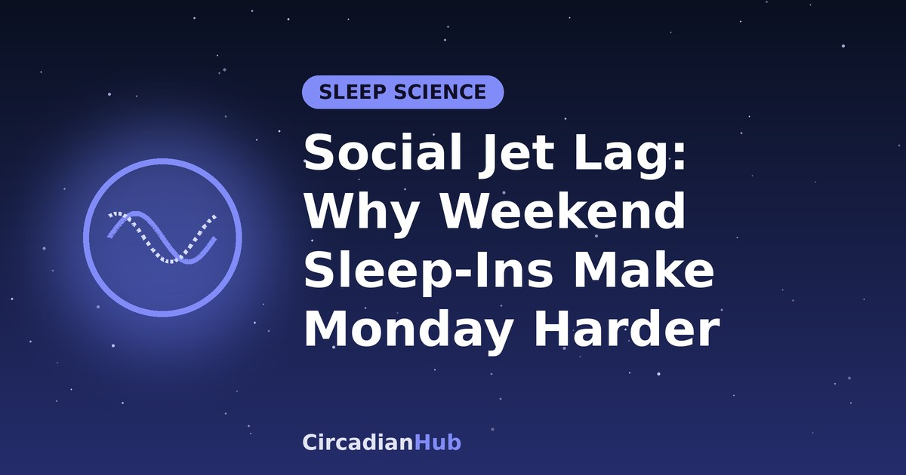

Social Jet Lag: Why Weekend Sleep-Ins Make Monday Harder

You do not need to board a plane to get jet lag. Many people give themselves a mild version every week: up early Monday to Friday, then out late and asleep until mid-morning at the weekend. By Sunday night you are not sleepy, and by Monday morning the alarm feels cruel. Researchers call this social jet lag. This guide explains what it is, how to measure yours, what the research says about it, and how to shrink it without giving up your weekend.
What is social jet lag?
The term was introduced in 2006 by the German chronobiologist Till Roenneberg and colleagues. It describes the mismatch between your body clock, which runs on biological time, and your schedule, which runs on social time: work, school, family and friends. It is measured as the difference between the middle of your sleep on free days and the middle of your sleep on work days.
The comparison with real jet lag is useful. If you sleep two hours later at the weekend, it is a little like flying two time zones west on Friday night and then flying two zones back east on Sunday night. As our eastbound and westbound guides explain, travelling east is the harder direction, because it means asking your body clock to move earlier. That is the Monday-morning problem in a nutshell.
How to work out your social jet lag
You need your sleep midpoint, the halfway point between falling asleep and waking, on a work day and on a free day. Free days mean days when you wake without an alarm.
- Write down roughly when you fall asleep and wake on work days, and find the halfway point.
- Do the same for free days.
- Subtract the work-day midpoint from the free-day midpoint.
| Falls asleep | Wakes | Midpoint | |
|---|---|---|---|
| Work days | 23:00 | 07:00 | 03:00 |
| Free days | 01:30 | 10:00 | 05:45 |
| Social jet lag | 2 hours 45 minutes | ||
There are no official cut-offs, but a gap under an hour is generally considered small, and a gap of two hours or more is where most researchers start to pay attention. Large surveys suggest that an hour or more is common, and that a sizeable minority of people have two hours or more.
One caution: if you are short of sleep during the week, your free-day sleep includes catch-up sleep, so your free-day midpoint is later than your true body-clock timing. Researchers adjust for this when they work out chronotype. For a quick estimate, the simple method is still useful. Our guide to chronotypes explains how natural timing varies.
Why it happens
- Your chronotype is later than your schedule. Night owls are forced to wake early on work days and drift later when they can. The later your natural timing and the earlier your alarm, the bigger the gap.
- You build up sleep debt on weekdays. Short weeknights lead to long weekend lie-ins. Our article on sleep debt and weekend catch-up sleep explains why, and why it is only a partial fix.
- Evening light and screens push the clock later. Bright light late at night delays your body clock, and a later body clock makes the next morning harder. See blue light and melatonin.
- Not enough morning daylight. Light soon after waking is the main signal that sets your clock. Many people get very little of it on work mornings.
- Social life. Late dinners, events and screens on Friday and Saturday nights make later bedtimes almost automatic.
What does the research say?
Social jet lag has been studied most in large surveys, and the results point in a consistent direction, though most of them show associations and not proof of cause.
- In 2012, Roenneberg and colleagues reported in Current Biology on data from about 65,000 people. They found that more social jet lag was linked to a higher chance of being overweight or obese, with each hour of social jet lag associated with roughly 33% higher odds. The authors reported that this link was not explained by sleep duration alone, though other sleep experts note that timing and duration are hard to separate fully.
- Earlier work from 2006 found that people with larger social jet lag were more likely to smoke.
- Other studies have linked bigger gaps between work-day and free-day sleep to more tiredness, lower mood and heavier use of caffeine and alcohol. These findings are mixed, and people with demanding lives can have both big gaps and other risk factors.
The honest summary is that a large, regular gap between weekday and weekend sleep is a marker of a body clock being pulled out of line. Whether it causes harm by itself, or whether it travels with other unhealthy habits, is still being worked out. The practical advice, to keep your schedule more consistent, does not depend on the answer.
There is also encouraging evidence on the fix. In a study of factory workers, people whose shifts were moved to better fit their natural timing slept up to almost an hour longer on work days and reported feeling more rested. The research suggests that when the schedule moves closer to the body clock, sleep gets longer.
Why does Monday feel so bad?
Suppose you sleep until 10:00 on Sunday. Your body clock drifts later, so on Sunday night you do not feel sleepy until about 01:00 or later. When the alarm goes off at 07:00 on Monday, your body thinks it is 05:00 or earlier. You are short of sleep, your alertness is low and your appetite and mood are out of step. Many people say it takes a few days to feel normal again, and then the weekend arrives and the cycle repeats.
Is a weekend lie-in always bad?
No. A small shift is normal and probably harmless. Sleeping an hour later on Saturday is much less of a jolt than sleeping three hours later. The aim is not a perfect schedule, it is to keep the gap modest, ideally within about an hour, and to avoid using weekend sleep to pay for weekday shortfalls. If you often need a big lie-in to feel human, the better question is why your weeknights are too short.
How to reduce your social jet lag
- Measure first. Use the table above for a typical week. Knowing that your gap is 2 hours 45 minutes is more useful than a vague feeling.
- Fix the weeknights. Move your weekday bedtime earlier so you are not building debt. A 15-minute shift every few days is easier than a big jump. See how to shift your wake-up time for the method.
- Cap the lie-in. Wake within an hour or so of your weekday time. If you still need more rest, use a short afternoon nap. See the best nap length.
- Get light as soon as you wake, even at the weekend. Morning daylight anchors the clock and makes it easier to be sleepy at a reasonable hour. See morning sunlight and your circadian rhythm.
- Dim the evening. Lower the lights and screen brightness in the last hour or two before bed, especially if you stay up late on Friday and Saturday.
- Keep meals and exercise regular. Eating and moving at similar times each day gives the clock extra cues.
- Watch caffeine. A late coffee on Sunday afternoon can add to a poor Sunday night. See how long caffeine stays in your system.
- Protect Sunday night. Go to bed at your usual time or a little earlier. A calm pre-bed routine helps if you find it hard to fall asleep.
A three-week plan to shrink the gap
This example is for a night owl who starts with a social jet lag of 2 hours 45 minutes. It raises weekday sleep and lowers the weekend gap step by step.
| Stage | Weekday sleep (midpoint) | Free-day sleep (midpoint) | Social jet lag |
|---|---|---|---|
| Now | 00:00 to 07:00 (03:30) | 02:00 to 10:30 (06:15) | 2 h 45 min |
| Week 1 | 23:30 to 07:00 (03:15) | 01:00 to 09:00 (05:00) | 1 h 45 min |
| Week 2 | 23:00 to 07:00 (03:00) | 00:00 to 08:30 (04:15) | 1 h 15 min |
| Week 3 | 23:00 to 07:00 (03:00) | 23:30 to 08:00 (03:45) | 45 min |
Notice that weekday sleep grows from 7 hours to 8 hours, so the weekend no longer has to make up a shortfall. Adjust the numbers to match your own schedule. The CircadianHub calculator can suggest bedtimes on whole 90-minute sleep cycles.
What if I stay out late on Saturday night?
It happens, and it does not need to ruin the week. Aim to wake no more than two hours later than usual, get outdoors into daylight, and have a 20-minute nap in the early afternoon if you need it. Go to bed at your normal time on Sunday. One late night costs little if you return to your regular timing quickly.
Who is most affected?
Teenagers and young adults
Body clocks tend to run later during the teenage years, while school often starts early. That makes large gaps between school nights and weekends very common. Gradual changes, morning light and a firm limit on late-night screens help, and so does asking whether school start times could be later.
Night owls
If your natural timing is late, a conventional schedule will always cost you a bit of sleep. You can narrow the gap with morning light and an earlier-but-consistent routine, and by choosing work times that suit you if you have the choice.
Shift workers
Shift workers have their own, often larger, version of the problem, because work times change and the body clock struggles to follow. See our rotating shift work guide and night shift sleep schedule.
Remote and flexible workers
If you can start later without penalty, shifting your working hours toward your natural timing is probably the single most effective change, in line with the factory-worker findings above.
The same idea applies to the clock change
When the clocks change, the whole population briefly gets a form of social jet lag, because social time moves by an hour while body clocks do not. Our guide to adjusting to the daylight saving time change uses the same principle: shift gradually and use light.
When to talk to a doctor
Speak to a doctor if you are very sleepy during the day despite plenty of time in bed, if you cannot fall asleep until the early hours however you adjust your routine, or if you regularly sleep much longer than 9 hours and still feel exhausted. Some conditions, including delayed sleep phase disorder, sleep apnoea and depression, can look like a simple timing problem. If you work shifts and feel constantly exhausted, see shift work sleep disorder.
Frequently asked questions
Is social jet lag the same as sleep debt?
No, though they are linked. Sleep debt is about how much you sleep. Social jet lag is about when you sleep. Many people have both: short weeknights create debt and long weekends create the gap.
Can I fix Monday with melatonin?
It is not usually the right tool for a weekly shift. Timing and dose matter, so speak to a doctor or pharmacist first. Morning light and a steadier routine do more for most people.
Does sleeping in matter if I feel fine?
You may be one of the people who copes well, but the research is based on average patterns. If you feel fine and your gap is small, there is little to worry about. If you notice Sunday-night insomnia or Monday exhaustion, the gap is probably costing you something.
How quickly can I shrink my gap?
Many people can narrow it gradually, for example by 30 to 60 minutes a week, if they change in small steps. Do not try to cut it all at once.
Is waking at the same time every day really necessary?
Not exactly the same, but a wake time within about an hour on all seven days is a good target. It keeps your clock steady without taking all the pleasure out of weekends.
Summary
- Social jet lag is the gap between your sleep midpoint on free days and on work days.
- Sleeping in at the weekend shifts your body clock later, which makes Sunday night and Monday morning harder.
- Large surveys link bigger gaps to higher body weight and other problems, but these are associations and not proof of cause.
- Keep the gap to about an hour by fixing weeknight sleep, capping lie-ins and getting daylight in the morning.
- Change in small steps, and shrink the gap over weeks, not days.
- Ongoing exhaustion or sleep trouble deserves a conversation with a doctor.
Find a bedtime that fits whole sleep cycles with our Bedtime Calculator.
Sources and further reading
Last updated: 1 October 2026. Links are general background reading from public-health organisations. How we write and update our guides.
Medical disclaimer: This article is for general information only and is not medical advice. If you have persistent sleep problems or excessive daytime sleepiness, speak with a doctor or sleep specialist.